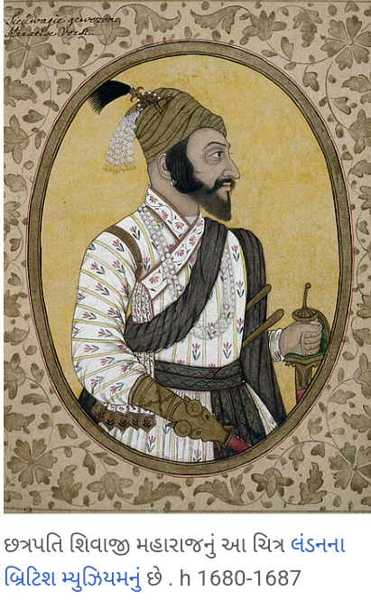
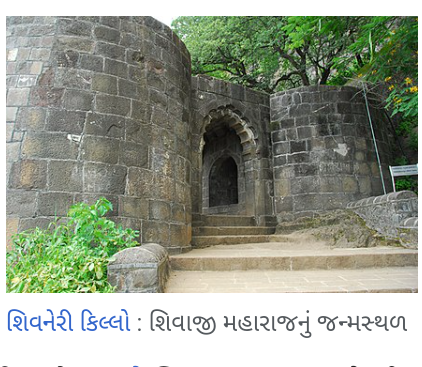
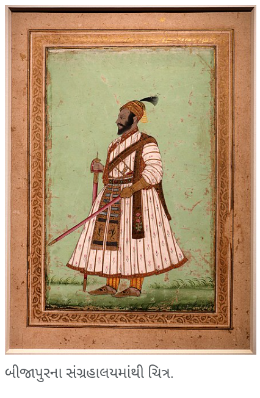
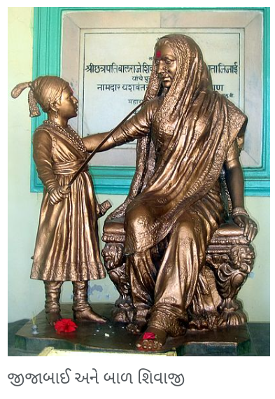
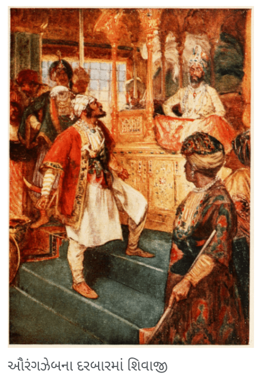
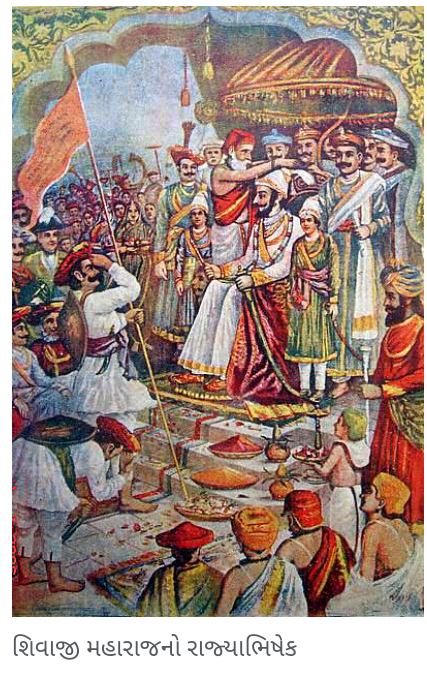
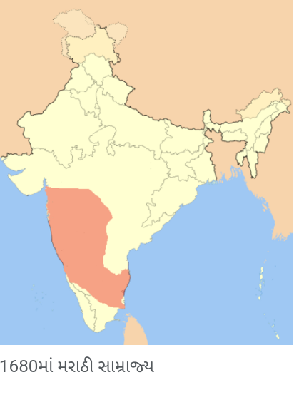
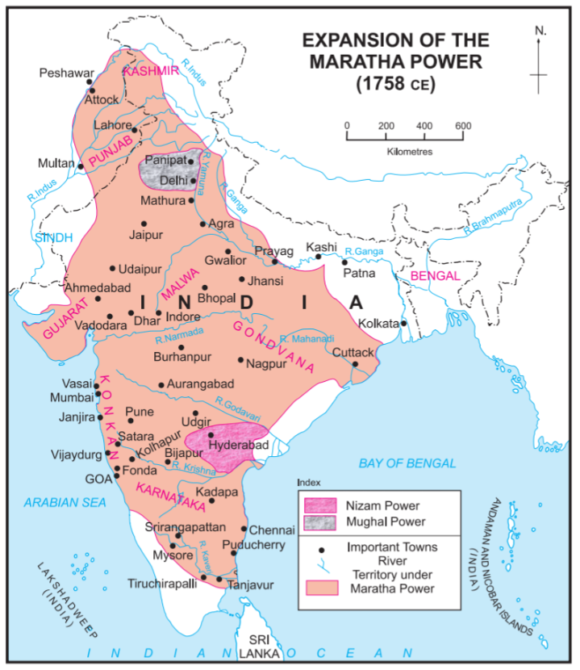

શિવાજી શાહજી ભોસલે ( ફેબ્રુઆરી 19 , 1630 – 3 એપ્રિલ, 1680 ), જેઓ છત્રપતિ શિવાજી મહારાજ તરીકે જાણીતા છે , તે ભારતીય રાજા અને મરાઠા સામ્રાજ્યના સ્થાપક હતા. શિવરાયે બીજાપુરની ક્ષીણ થઈ રહેલી આદિલશાહીમાંથી પોતાનું સ્વતંત્ર રાજ્ય બનાવ્યું અને મરાઠા સામ્રાજ્યની સ્થાપના કરી. એ.ડી. તેઓ 1674 માં રાયગઢ કિલ્લામાં છત્રપતિ તરીકે ઔપચારિક રીતે રાજ્યાભિષેક થયા હતા .
તેમના શાસનકાળ દરમિયાન, શિવાજી મહારાજે મુઘલ સામ્રાજ્ય , ગોવાલકોંડાની કુતુબશાહી , બીજાપુરની આદિલ શાહી અને યુરોપીયન સંસ્થાનવાદી સત્તાઓ સાથે જોડાણ અને દુશ્મનાવટ બંને હતી. છત્રપતિ શિવાજી મહારાજે શિસ્તબદ્ધ સેના અને સુવ્યવસ્થિત વહીવટી તંત્રના બળ પર એક શક્તિશાળી અને પ્રગતિશીલ રાજ્યનું નિર્માણ કર્યું. દરિયાકાંઠાના અને આંતરીક પ્રદેશોમાં કિલ્લાઓનું સમારકામ કરવા ઉપરાંત તેણે ઘણા નવા કિલ્લાઓ પણ બનાવ્યા. શિવરાયે શિસ્તબદ્ધ વહીવટી સંસ્થાઓ સાથે સક્ષમ અને પ્રગતિશીલ નાગરિક સરકારની સ્થાપના કરી. તેમણે પ્રાચીન હિંદુ રાજકીય પરંપરાઓ, કોર્ટ સંમેલનોને પુનર્જીવિત કર્યા .
ભૂપ્રદેશ વિશેના તેમના ઉત્તમ જ્ઞાન, ચળવળની અદ્ભુત ગતિ અને ગેરિલા કવિતાની ટેકનિક સાથે, તેમણે એક નાના બળ સાથે શકિતશાળી મુઘલ અને આદિલ શાહી દળોનો સફળતાપૂર્વક સામનો કર્યો . તેમણે પારસીને બદલે મરાઠી અને સંસ્કૃત ભાષાઓના ઉપયોગને પ્રોત્સાહન આપ્યું , જે તે સમયે શાસનમાં સામાન્ય હતું . ભારતીય સ્વતંત્રતા સંગ્રામમાં, રાષ્ટ્રવાદી નેતાઓએ શિવાજી મહારાજની શૌર્યગાથાઓનો ઉપયોગ લોકોને એકત્ર કરવા અને તેમનું મનોબળ વધારવા માટે કર્યો હતો.

શિવાજી મહારાજનો વારસો નિરીક્ષકો અને સમય પ્રમાણે બદલાય છે. પરંતુ તેમના મૃત્યુ પછી લગભગ બે સદીઓ પછી, તેમણે ભારતીય સ્વતંત્રતા ચળવળના ઉદય સાથે વધુ મહત્વ મેળવવાનું શરૂ કર્યું કારણ કે ઘણા ભારતીય સ્વતંત્રતા સેનાનીઓ તેમને પ્રોટો-નેશનાલિસ્ટ અને હિન્દુ હીરો માનતા હતા. મહારાષ્ટ્રના સામાજિક અને રાજકીય ઇતિહાસમાં શિવાજી મહારાજનો ઘણો પ્રભાવ છે . શિવાજી મહારાજ મરાઠી લોકોની ઓળખનો અભિન્ન અંગ છે. શિવાજી મહારાજનો જન્મદિવસ શિવ જયંતિ તરીકે ઉજવવામાં આવે છે.

પ્રારંભિક જીવન
19 ફેબ્રુઆરીના રોજ પુણે જિલ્લામાં જુન્નર શહેરની નજીક આવેલ શિવનેરી પહાડી કિલ્લો. છત્રપતિ શિવાજી મહારાજનો જન્મ 1630માં થયો હતો. છત્રપતિ શિવાજી મહારાજની ચોક્કસ જન્મતારીખને લઈને ઈતિહાસકારોમાં મતભેદ છે. મહારાષ્ટ્ર રાજ્ય સરકારે 2001માં ફાલ્ગુન
વદ્ય તૃતીયા શક 1551 (શુક્રવાર, ફેબ્રુઆરી 19, 1630)ને શિવરાયની જન્મ તારીખ તરીકે સ્વીકારી હતી. અન્ય સંભવિત તારીખોમાં જન્મ તારીખ તરીકે 6 એપ્રિલ 1627 (વૈશાખ શુદ્ધ તૃતીયા)નો સમાવેશ થાય છે. મહારાષ્ટ્ર સરકારે શિવાજી મહારાજ ( શિવાજી જયંતિ )
ના જન્મની યાદમાં 19 ફેબ્રુઆરીને રજા તરીકે સૂચિબદ્ધ કરી છે .
શિવાજી મહારાજનું નામ શિવાયના નામ પરથી રાખવામાં આવ્યું હતું. એક દંતકથા અનુસાર, જીજાબાઈએ શિવનેરી કિલ્લામાં શિવાઈ દેવીને બળવાન પુત્ર આપવા માટે પ્રાર્થના કરી ત્યારથી છોકરાનું નામ 'શિવાજી' રાખવામાં આવ્યું હતું.
શિવરાયના પિતા શાહજીરાજે ભોંસલે મરાઠા સેનાપતિ હતા જેમણે ડેક્કન સલ્તનતની સેવા કરી હતી. તેમની માતા જીજાબાઈ હતી, જે સિંદખેડના લખુજી જાધવરાવની પુત્રી હતી . જાધવો દેવગીરીના યાદવ વંશના હતા .
શિવાજી મહારાજના જન્મ સમયે, ડેક્કન સામ્રાજ્ય ત્રણ ઇસ્લામિક સલ્તનતમાં વહેંચાયેલું હતું: બીજાપુર , અહમદનગર અને ગોવાલકોંડા . શાહજીરાજે અહમદનગરની નિઝામશાહી , બીજાપુરની આદિલશાહી અને મુઘલો વચ્ચે સમયાંતરે તેમની નિષ્ઠા બદલી ; પરંતુ તેણે હંમેશા પૂણેને પોતાની રાજધાની તરીકે રાખ્યું અને પોતાની એક નાની સેના જાળવી રાખી.

શિવાજી મહારાજ મરાઠા જાતિના હતા અને ભોસલે કુળના હતા. તેમના દાદા માલોજી (1552-1597) અહમદનગર સલ્તનતના પ્રભાવશાળી સેનાપતિ હતા અને તેમને "રાજા"નું બિરુદ આપવામાં આવ્યું હતું. તેમને લશ્કરી ખર્ચ માટે પુણે, સુપે, ચાકણ અને ઈન્દાપુરના દેશમુખ અધિકારો આપવામાં આવ્યા હતા . તેમને તેમના પરિવારના રહેઠાણ માટે શિવનેરી કિલ્લો પણ આપવામાં આવ્યો હતો ( સી. 1590 ).
બીજાપુરના સંગ્રહાલયમાંથી ચિત્ર.
બીજાપુર સલ્તનત સાથે સંઘર્ષ
એ.ડી. 1636 માં, બીજાપુરની આદિલ શાહી સલ્તનતે દક્ષિણના રાજ્યો પર આક્રમણ કર્યું. સલ્તનત તાજેતરમાં મુઘલ સામ્રાજ્યનું રાજ્ય બની ગયું હતું . શાહજી રાજા તે સમયે પશ્ચિમ ભારતના પહાડી પ્રદેશમાં સરદાર હતા અને તેમણે આદિલ શાહીને ટેકો આપ્યો હતો. શાહજીરાજા જીતેલા પ્રદેશોમાં જાગીરોને ઈનામ આપવાની તકો શોધી રહ્યા હતા , જેમાંથી તે વાર્ષિક કર વસૂલ કરી શકે.
શાહજી મુઘલોના બળવાખોર લડવૈયા હતા. બીજાપુર સરકારના ટેકાથી શાહજીરાજાનું મુઘલો સામેના અભિયાનો સામાન્ય રીતે અસફળ રહ્યા હતા. મુઘલ સેના દ્વારા તેમનો સતત પીછો કરવામાં આવતો હતો અને શિવાજી મહારાજ અને માતા જીજાબાઈએ સતત એક કિલ્લાથી બીજા કિલ્લામાં જવું પડતું હતું.
1636 માં, શાહજીરાજા બીજાપુરની સેવામાં જોડાયા અને તેમને પુણેની જહાગીરી આપવામાં આવી. શાહજીરાજે પાછળથી તુકાબાઈ સાથે ફરીથી લગ્ન કર્યા. જીજાબાઈ નાના શિવાજીરાજ સાથે પુનામાં રહેવા આવ્યા. તુકાબાઈ અને શાહજીરાજેના પુત્રો, એકોજી ભોસલે ( વેંકોજી ભોસલે ) એ પાછળથી વર્તમાન તામિલનાડુમાં તંજાવુર ખાતે તેમનું રાજ્ય સ્થાપ્યું .
જીજાબાઈ શિવાજી મહારાજ સાથે પુણેમાં સ્થાયી થયા. તે સમયે બીજાપુરી શાસક આદિલ શાહે શાહજી રાજાને બેંગ્લોરમાં મૂક્યા હતા અને દાદાજી કોંડદેવને વહીવટદાર તરીકે નિયુક્ત કર્યા હતા. 1647માં કોંડદેવનું અવસાન થયું અને શિવરાયે સત્તા સંભાળી. તેમના પ્રથમ અભિયાને બીજાપુરી સરકારને સીધો પડકાર ફેંક્યો હતો.
જીજાબાઈ પુના રહેવા ગયા ત્યારે પૂનાની હાલત ખૂબ જ ખરાબ હતી. પછી જીજાબાઈએ છોટે શિવાજીરાજ અને કારભારીના હાથે પૂણેના એક ખેતરમાં પ્રતીક હેઠળ સોનાથી મઢેલું હળ ફેરવીને પૂનાને પુનઃસ્થાપિત કરવાનું શરૂ કર્યું. જીજાબાઈએ શિવાજી રાજાને તેમના બાળપણ દરમિયાન અને તેમના પુખ્તાવસ્થા પછી પણ (જેમ કે જ્યારે તેઓ મોટા થઈ રહ્યા હતા ત્યારે સિંહના કિલ્લા પર સવારી કરવી) દ્રઢ માર્ગદર્શન પૂરું પાડ્યું હતું. કેટલાક ઈતિહાસકારો માને છે કે જીજાબાઈએ મહારાજા શિવાજીને હિંદુ સ્વરાજ્યની સ્થાપનાના તેમના સ્વપ્નને સાકાર કરવા પ્રેરણા આપી હતી.

એ.ડી. 1646માં, 16 વર્ષીય શિવરાયે બીજાપુર દરબારમાં સુલતાનની માંદગીને કારણે થયેલી ગરબડનો લાભ લીધો , અને ત્યાંથી મળેલા મહાન ખજાનાનો કબજો મેળવ્યો. પછીના બે વર્ષોમાં શિવરાયે પુણે નજીકના ઘણા મહત્વના કિલ્લાઓ કબજે કર્યા . તેમાં પુરંધર , કોંધના અને ચાકનનો સમાવેશ થાય છે . ઉપરાંત તેઓએ સુપે , બારામતી અને ઈન્દાપુરના સ્થળો સીધા કબજે કર્યા હતા . તેણે તોરંગગઢની સામે મુરુમ્બદેવની ટેકરી જીતી અને તેનું સમારકામ કરીને તેનું નામ રાજગઢ રાખ્યું . આ માટે તેણે તોરણા ખાતે મળેલા ખજાનાનો ઉપયોગ કર્યો. રાજગઢ એક દાયકા કરતા વધુ સમય સુધી તેમની રાજધાની હતી .
આ પછી શિવાજી મહારાજ કોંકણ તરફ વળ્યા અને મહત્વપૂર્ણ શહેર કલ્યાણ પર કબજો કર્યો. બીજાપુર સરકારે આ ઘટનાઓની નોંધ લઈને પગલાં લેવાનો નિર્ણય કર્યો. 25 જુલાઈ 1648ના રોજ, શાહજી રાજાને શિવાજી મહારાજને પકડવાના પ્રયાસમાં બીજાપુર સરકારના આદેશ પર બાજી ઘોરપડે નામના સાથી મરાઠા સરદાર દ્વારા કેદ કરવામાં આવ્યા હતા.
1649 માં જીંજીને કબજે કર્યા પછી , શાહજી રાજાને કર્ણાટકમાં આદિલશાહનું સ્થાન પ્રાપ્ત કર્યા પછી મુક્ત કરવામાં આવ્યો . 1649 - 1655 ની વચ્ચે શિવરાયે તેમના વિજયોમાં વિરામ લીધો અને શાંતિથી તેમના લાભોને એકીકૃત કર્યા. તેમના પિતાની મુક્તિ પછી, શિવાજી મહારાજે ફરી હુમલાઓ શરૂ કર્યા અને 1656માં, વિવાદાસ્પદ સંજોગોમાં, બીજાપુરના સાથી મરાઠા સામંત સ્વામી ચંદ્રરાવ મોરેની હત્યા કરી અને તેમની પાસેથી હાલના મહાબળેશ્વરના હિલ સ્ટેશન નજીક આવેલી જાવલી ખીણ કબજે કરી. . ભોસલે અને વધુ પરિવારો ઉપરાંત, બીજા ઘણા લોકોએ બીજાપુરની આદિલશાહીમાં સેવા આપી હતી, જેમાં સાવંતવાડીના સાવંત , મુધોલના ઘોરપડેસ , ફલટનના નિમ્બાલકર, શિર્કેસ, માનેસ અને મોહિતોનો સમાવેશ થાય છે, ઘણાએ દેશમુખી અધિકારમાં અભિનય કર્યો હતો . આ શક્તિશાળી પરિવારોને વશ કરવા માટે, શિવરાયે વિવિધ યુક્તિઓ અપનાવી હતી જેમ કે વૈવાહિક જોડાણો બનાવવા, દેશમુખોને પરાસ્ત કરવા માટે ગામના પાટલા સાથે સીધો વ્યવહાર કરવો અથવા તેમની સાથે લડવું.
શાહજી રાજા તેમના પછીના વર્ષોમાં તેમના પુત્ર પ્રત્યે દ્વિધાભર્યા રહ્યા અને તેમની બળવાખોર પ્રવૃત્તિઓને નાપસંદ કરી. તેણે બીજાપુરીઓને શિવાજી સાથે ગમે તે કરવા કહ્યું. શાહજી રાજાનું 1664-1665માં શિકાર અકસ્માતમાં મૃત્યુ થયું હતું.
અફઝલ ખાન સાથે લડાઈ
બીજાપુર સલ્તનત શિવાજી મહારાજ દ્વારા થયેલા નુકસાનથી નારાજ હતી . મુઘલો સાથે શાંતિ સંધિ અને બીજા સુલતાન તરીકે તરુણ અલી આદિલ શાહની સામાન્ય સ્વીકૃતિ પછી, બીજાપુરની સરકાર વધુ સ્થિર બની અને તેનું ધ્યાન શિવાજી મહારાજ તરફ વળ્યું. 1657માં સુલતાન, અથવા તેની માતા અને શાસને, શિવાજી મહારાજની ધરપકડ કરવા માટે એક પીઢ સેનાપતિ અફઝલ ખાનને મોકલ્યો. શિવાજી મહારાજ પર આગળ વધતા પહેલા, બીજાપુરી દળોએ તુલજા ભવાની મંદિર , જે શિવાજી મહારાજના પરિવારનું પવિત્ર સ્થળ હતું, અને પંઢરપુર ખાતેના વિઠ્ઠલ મંદિરને અપવિત્ર કર્યું હતું , જે હિંદુઓનું મુખ્ય તીર્થસ્થાન છે.
બીજાપુરી સેના દ્વારા પીછો કર્યા પછી, શિવાજી મહારાજ પ્રતાપગઢ કિલ્લામાં ગયા, જ્યાં તેમના ઘણા સાથીદારોએ તેમને આત્મસમર્પણ કરવા દબાણ કર્યું. જ્યારે અફઝલ ખાન વાય નજીક આવ્યો, ત્યારે શિવાજીએ હાલના મહાબળેશ્વર નજીકના પ્રતાપગઢથી તેનો મુકાબલો કરવાનું નક્કી કર્યું .
બંને સેનાઓએ એકબીજાને રોક્યા. જ્યારે શિવાજી મહારાજ ઘેરો તોડી શક્યા ન હતા, ત્યારે અફઝલ ખાન પાસે શક્તિશાળી ઘોડેસવાર હોવા છતાં ઘેરાબંધીના સાધનોનો અભાવ હતો . તેથી તે પણ કિલ્લો લેવામાં અસમર્થ હતો. બે મહિના પછી, અફઝલ ખાને કિલ્લાની બહાર ખાનગી બેઠક માટે વાટાઘાટો કરવા શિવાજી મહારાજને એક દૂત મોકલ્યો. [૫૧] [૫૨] સંધિની વાટાઘાટો શરૂ થઈ અને અફઝલ ખાને આગ્રહ કર્યો કે અંતિમ વાટાઘાટો માટે શિવાજી મહારાજ પોતે આવે. પરંતુ શિવાજીરાજના વકીલ (પંતાજી ગોપીનાથ બોકિલ)એ અફઝલ ખાનને ઘેરી લીધો અને તેને પ્રતાપગઢમાં જ મળવા આમંત્રણ આપ્યું.
10 નવેમ્બર, 1659 ના રોજ, બંને પ્રતાપગઢ કિલ્લાની તળેટીમાં એક શિબિરમાં મળ્યા હતા. એવું નક્કી કરવામાં આવ્યું હતું કે દરેક વ્યક્તિએ માત્ર એક તલવાર સાથે સજ્જ થવું જોઈએ અને ફક્ત એક જ અનુયાયી હાજર રહે.
શિવાજી મહારાજને શંકા હતી કે અફઝલ ખાન તેમની ધરપકડ કરશે અથવા તો તેમના પર હુમલો કરશે. એક દાયકા અગાઉ, ખાને આવી જ એક મુલાકાત દરમિયાન એક હિંદુ સરદારને કેદ કર્યો હતો. તેથી, સાવચેતી તરીકે, તેઓએ બખ્તર પહેર્યું અને તેમની સાથે બિચાવા અને વાઘના પંજા રાખ્યા . બિચા બખ્તરમાં છુપાયેલું હતું જ્યારે ડાબા હાથ પર વાઘનો પંજો હાથના પંજાની અંદર છુપાયેલો હતો જેથી તે જોઈ શકાય નહીં. આ સાથે તેણે જમણા હાથમાં ખંજર લીધું જીવા મહલા શિવાજી મહારાજના વિશ્વાસુ સરદાર હતા , જ્યારે સૈયદ બંદા અફઝલ ખાન સાથે અગ્રણી ઉદ્યોગપતિ હતા . મુલાકાત દરમિયાન ઉંચાપુરાના બલદંદ અફઝલ ખાન શિવાજી મહારાજને ભેટી પડ્યા અને શિવાજી રાજના જીવનનો અંત આવ્યો. તે જ સમયે અફઝલ ખાને શિવાજી મહારાજ પર ખંજર વડે હુમલો કર્યો પરંતુ શિવાજી રાજ તેમના બખ્તરના કારણે બચી ગયા. અફઝલ ખાનની દગાખોરી જોઈને શિવાજી રાજાએ ખાનના પેટમાં વાઘ દાખલ કર્યો. તે જ સમયે ચાહુમાં અફઝલ ખાનના મૃત્યુની બૂમો ફેલાઈ ગઈ. બડા સૈયદે તરત જ શિવાજીને તેની તલવારથી જોરદાર ફટકો માર્યો , જેને ઝડપી જીવા મહેલે પોતાના પર પકડી લીધો અને શિવાજીરાજનો જીવ બચાવ્યો. આ જ કારણ છે કે " હોતા જીવા કે વચલા શિવ " કહેવત પ્રચલિત થઈ.
મુલાકાતના પ્રસંગે પ્રતાપગઢ પરથી પૂર્વ-આયોજિત ચેતવણી પર ત્રણ તોપો છોડવામાં આવી હતી , અને ખાનના છાવણીની નજીકની ઝાડીઓમાં છુપાયેલા માવલાઓએ ખાનની સેના પર હુમલો કર્યો હતો. ખાનના પુત્ર ફઝલ ખાન અને અન્ય કેટલાક સરદારો લપ્તલપત વાયના મુખ્ય છાવણીમાં આવ્યા. અહીં અન્નકૂટનો જાન હતો . તેઓ ખજાનો, હાથી અને અન્ય ભારે સામાન છોડીને નેતાજીની પીછો કરી રહેલી સેનાથી બચવા બીજાપુર ભાગી ગયા .
10 નવેમ્બર 1659ના રોજ પ્રતાપગઢના યુદ્ધમાં શિવાજી મહારાજની સેનાએ બીજાપુર સલ્તનતની સેનાને નિર્ણાયક રીતે હરાવ્યું . બીજાપુર સૈન્યના 3,000 થી વધુ સૈનિકો માર્યા ગયા અને એક સરદાર, અફઝલ ખાનના બે પુત્રો અને બે મરાઠા સરદારોને કેદી લેવામાં આવ્યા.વિજય પછી, શિવરાયે પ્રતાપગઢની નીચે ભવ્ય સમીક્ષા યોજી હતી. પકડાયેલા દુશ્મનોમાંથી અધિકારીઓ અને સામાન્ય લોકો બંનેને મુક્ત કરવામાં આવ્યા હતા અને પૈસા, ખોરાક અને અન્ય ભેટો સાથે તેમના ઘરે પાછા મોકલવામાં આવ્યા હતા. મરાઠાઓને તેમના પ્રદર્શન પ્રમાણે ઈનામો આપવામાં આવ્યા હતા.
અફઝલ ખાનના મૃત્યુ પછી, તેણે તેના મૃતદેહનો ઇસ્લામિક રીતે અગ્નિસંસ્કાર કર્યો અને તેના માટે પ્રતાપગઢના પાયા પર એક કબર બનાવી અને કબરની કાયમી જાળવણીની વ્યવસ્થા કરી.
અફઝલ ખાનના મૃત્યુ પછી, શિવાજી રાજે કોંકણ પટ્ટામાં વધુ કિલ્લાઓ અને પ્રદેશો જીતવા માટે ડોરોજી નામના એક લડાયકને મોકલ્યો . શિવરાયે પોતે કોલ્હાપુરા ગયા અને પન્હાલા જીતી લીધું. આધુનિક સમયમાં, અફઝલ ખાનના મૃત્યુના આ દિવસને શિવ પ્રતાપ દિવસ તરીકે ઉજવવામાં આવે છે .
પન્હાલાની ઘેરાબંધી
બીજાપુરી સૈન્યને હરાવીને, શિવાજી મહારાજની સેનાએ કોંકણ અને કોલ્હાપુર તરફ કૂચ કરી , પન્હાલા કિલ્લા પર કબજો કર્યો અને 1659માં રૂસ્તમ ઝમાન અને ફઝલ ખાનની આગેવાની હેઠળ મોકલવામાં આવેલ બીજાપુરી સૈન્યને હરાવી. 1660માં આદિલ શાહે તેના સેનાપતિ સિદ્દી જૌહરને મુઘલો સાથે જોડાણમાં મોકલ્યો. મુઘલ સેના ઉત્તર તરફથી હુમલો કરશે જ્યારે સિદ્દી જૌહર દક્ષિણ સરહદ પર હુમલો કરશે. તે સમયે શિવાજી મહારાજ તેમની સેના સાથે પન્હાલા કિલ્લામાં પડાવ નાખતા હતા. 1660 ના દાયકાના મધ્યભાગમાં, સિદ્દી જૌહરના દળોએ પન્હાલાને ઘેરો ઘાલ્યો અને કિલ્લાનો સપ્લાય માર્ગ કાપી નાખ્યો.
સિદ્દી જોહરે પન્હાલા ખાતે ગોળીબાર દરમિયાન રાજાપુર ખાતે અંગ્રેજો પાસેથી ગ્રેનેડ ખરીદીને પોતાની કાર્યક્ષમતા વધારી . કિલ્લા પર બોમ્બમારો કરવામાં મદદ કરવા માટે કેટલાક અંગ્રેજ તોપખાનાઓને કામે લગાડવામાં આવ્યા હતા. આ સમયે અંગ્રેજો દ્વારા ઉપયોગમાં લેવાતો ધ્વજ મુખ્ય રીતે ફરકાવવામાં આવ્યો હતો. અંગ્રેજોના આ વિશ્વાસઘાતને જ્યારે શિવનારાયણ સમજી ગયા ત્યારે તેમને ગુસ્સો આવ્યો. તેણે ડિસેમ્બરમાં રાજાપુરમાં એક અંગ્રેજી ફેક્ટરીને લૂંટીને બદલો લીધો અને ચાર અંગ્રેજોને પકડી લીધા અને 1663ના મધ્ય સુધી તેમને જેલમાં રાખ્યા.
મહિનાઓના ઘેરાબંધી પછી, શિવાજી મહારાજે સિદ્દી જૌહર સાથે વાટાઘાટો કરી અને 22 સપ્ટેમ્બર 1660ના રોજ વિશાલગઢ તરફ પીછેહઠ કરી અને કિલ્લો શરણે કર્યો. 1673માં મહારાજાએ પન્હાલા કિલ્લા પર ફરીથી કબજો કર્યો.
મુઘલ સામ્રાજ્ય સાથે સંઘર્ષ
શિવાજી મહારાજે 1657 સુધી મુઘલ સામ્રાજ્ય સાથે શાંતિપૂર્ણ સંબંધો જાળવી રાખ્યા હતા . જ્યારે મુઘલ સમ્રાટનો પુત્ર ઔરંગઝેબ દક્કનનો સુભાદાર હતો , ત્યારે શિવાજી મહારાજે બીજાપુરને જીતવા માટે તેમની મદદની ઓફર કરી હતી. આના બદલામાં, તેઓ શિવરાયના નિયંત્રણ હેઠળના બીજાપુરી કિલ્લાઓ અને ગામો પરના તેમના અધિકારોને સ્વીકારવા માંગતા હતા . મુઘલ પ્રતિસાદથી અસંતુષ્ટ અને બીજાપુર તરફથી સારી ઓફર મળતા તેણે મુઘલ ડેક્કન પર હુમલો કર્યો. મુઘલો સાથે શિવાજી મહારાજનો સંઘર્ષ માર્ચ 1657માં શરૂ થયો, જ્યારે તેમના બે અધિકારીઓએ અહેમદનગર નજીકના મુઘલ પ્રદેશ પરદરોડા પાડ્યા.આ પછી જુન્નાર પર દરોડા પાડવામાં આવ્યા હતા. આમાં શિવાજી મહારાજે 300,000 થી વધુ રોકડ અને 200 ઘોડા લીધા હતા . ઔરંગઝેબે નાસિરી ખાનને મોકલીને આ દરોડાનો જવાબ આપ્યો. નાસિરી ખાને અહમદનગર ખાતે મરાઠી સૈન્યને હરાવ્યું . જો કે, ઔરંગઝેબનો શિવ સામેનો પ્રતિકાર ચોમાસા અને બાદશાહ શાહજહાંની માંદગીને પગલે મુઘલ સિંહાસન માટે તેના ભાઈઓ સાથે ઉત્તરાધિકારની લડાઈ દ્વારા વિક્ષેપિત થયો હતો.
આગ્રા કેસ

1666માં, ઔરંગઝેબે શિવાજી રાજાને તેના નવ વર્ષના પુત્ર સંભાજી સાથે આગ્રા બોલાવ્યા (કેટલાક દસ્તાવેજો અનુસાર તેને દિલ્હી બોલાવવામાં આવ્યો હતો .) ઔરંગઝેબે રાજાને કંદહાર , જે હવે અફઘાનિસ્તાનમાં છે, મોગલની ઉત્તરપશ્ચિમ સરહદને મજબૂત કરવા મોકલવાની યોજના બનાવી. સામ્રાજ્ય જો કે, 12 મે 1666ના રોજ દરબારમાં, શિવરાયને પ્રમાણમાં જુનિયર સરદારોની સાથે મૂકવામાં આવ્યા હતા. આમાંના કેટલાકને તેણે યુદ્ધમાં પહેલાથી જ હરાવ્યા હતા.આ અપમાનને કારણે શિવાજી મહારાજે દરબાર છોડી દીધો.આના કારણે તેની તાત્કાલિક અટકાયત કરવામાં આવી. જયસિંહના પુત્ર રામસિંહે શિવાજી અને તેમના પુત્રની કસ્ટડીની ખાતરી આપી.
શિવાજી મહારાજ માટે નજરકેદની સ્થિતિ જોખમી હતી, કારણ કે ઔરંગઝેબના દરબારમાં ચર્ચા ચાલી રહી હતી કે શિવરાયને મારવા કે તેમને કામ પર રાખવા. જયસિંહે શિવાજી રાજને તેમની અંગત સુરક્ષાની ખાતરી આપી હતી. તેથી તેણે ઔરંગઝેબના નિર્ણયને પ્રભાવિત કરવાનો પ્રયાસ કર્યો. દરમિયાન, શિવાજી રાજે પોતાને મુક્ત કરવાની યોજના ઘડી. તેણે તેના મોટાભાગના માણસોને ઘરે પાછા મોકલ્યા અને રામ સિંહને પોતાની અને તેના પુત્રની સલામતી માટે સમ્રાટને આપેલી ખાતરી પાછી ખેંચી લેવા અને પોતાને મુઘલ સૈન્યમાં સમર્પણ કરવા કહ્યું.શિવાજી રાજાએ પછી બીમાર હોવાનો ઢોંગ કર્યો અને તપસ્યા તરીકે બ્રાહ્મણો અને ગરીબોને મીઠાઈઓથી ભરેલા મોટા બોક્સ મોકલવાનું શરૂ કર્યું . શરૂઆતમાં, રક્ષકોએ દરેક આગની તપાસ કરી. પરંતુ થોડા દિવસો પછી તે શિથિલ થવા લાગ્યો. બાદમાં તેઓએ તપાસ કરવાનું બંધ કરી દીધું હતું. 17 ઓગસ્ટ 1666 ના રોજ, શિવાજી મહારાજ પોતે એક મોટી ટોપલીમાં બેઠા અને સંભાજી બીજી ટોપલીમાં ભાગીને આગ્રા છોડી ગયા .
શંકાને ટાળવા માટે, શિવાજી રાજના વિશ્વાસુ હીરોજી ફરઝંદે શિવાજીના કપડા ફોલ્ડ કરીને અને તેમના હાથ બહાર ચોંટાડીને ઊંઘી જવાનો ડોળ કર્યો જેથી તેમની વીંટી જોઈ શકાય. જ્યારે તેને ખાતરી થઈ કે શિવરાય દૂર સુધી પહોંચી ગયા છે, ત્યારે તે પણ રક્ષકોને ટાળીને ભાગી ગયો. લાંબા સમય સુધી રક્ષકોને અંદર કોઈ હિલચાલનો અહેસાસ થયો અને જ્યારે તેઓ અંદર ગયા અને ત્યાં કોઈ ન મળ્યું, ત્યારે તેમને સાચી પરિસ્થિતિનો ખ્યાલ આવ્યો. ત્યાં સુધીમાં શિવાજી નાસી છૂટ્યાને 24 કલાક થઈ ગયા હતા.
આગ્રાથી, શિવાજી રાજાએ પોતાનો વેશ ધારણ કર્યો અને સ્વરાજ્ય તરફ આગળ વધવાને બદલે, મથુરા તરફ આગળ વધ્યા, જ્યાં તેમણે બીજા કેટલાક વિશ્વાસુ માણસો સાથે સંભાજીને અલગ માર્ગે મોકલ્યા. સંન્યાસીના વેશમાં મહારાષ્ટ્રમાં પ્રવેશ કર્યો. તેમાં પણ તેઓએ ઘણી સાવચેતી રાખવાની હતી. તે પોતે ખૂબ લાંબા અને ત્રાંસી, વાંકાચૂકા માર્ગે ફ્લોરથી ફ્લોર સુધી ચાલ્યા. ઉદ્દેશ્ય ફરી ઔરંગઝેબના હાથમાં ન આવે એનો હતો.
રાજ્યાભિષેક

શિવાજી મહારાજે તેમના અનેક અભિયાનો દ્વારા મોટી માત્રામાં જમીન અને સંપત્તિ મેળવી હતી. પરંતુ કોઈ ઔપચારિક શીર્ષક ન હોવાથી તે તકનીકી રીતે મુઘલ જમીનદાર અથવા બીજાપુરી જાગીરદારનો પુત્ર હતો; જેની પાસે તેના વાસ્તવિક પ્રદેશ પર શાસન કરવાનો કોઈ કાનૂની આધાર નથી. તેઓ કોઈપણ રાજા સાથે સમાન દરજ્જાનો દાવો કરી શકતા ન હતા. ઉપરાંત, તેમણે રાજ્યાભિષેક કર્યા વિના જેમના પર શાસન કર્યું હતું તેમની પાસેથી વાસ્તવિક વફાદારી અથવા ભક્તિની અપેક્ષા રાખવી ખોટું હતું. રાજ્યાભિષેક વિના તમામ રાયતો તેમના આદેશો કે આદેશોને ગંભીરતાથી લેવાના ન હતા. કોઈ રાજ્યાભિષેક ન હોવાથી, કોઈ સંધિ પર હસ્તાક્ષર કરવા, કોઈને ઔપચારિક રીતે જમીન આપવા અને આપણી રાજકીય શક્તિના ભાવિની ખાતરી કરવી શક્ય ન હતી. આ શાહી પદવી અન્ય મરાઠા નેતાઓના પડકારોને પણ અટકાવી શકે છે, જેમની સાથે શિવાજી રાજે તકનીકી રીતે સમાન હતા. વધુમાં, શિવરાય હિંદુ મરાઠા કે મુસ્લિમો દ્વારા શાસિત પ્રદેશમાં સહ-હિન્દુ સાર્વભૌમ પ્રદાન કરી શકતા હતા .

મૃત્યુ અને ઉત્તરાધિકાર
શિવાજીરાજના વારસદારનો પ્રશ્ન પેચીદો હતો. 1678માં શિવરાયે સંભાજી રાજાને પન્હાલા ખાતે કેદ કર્યા હતા . તે પછી સંભાજી રાજે તેમની પત્ની સાથે એક વર્ષ માટે મુઘલો પાસે ગયા . પાછળથી તે પસ્તાવો કર્યા વિના ઘરે પાછો ફર્યો અને ફરીથી પન્હાલા સુધી મર્યાદિત હતો.
શિવાજી મહારાજનું 50 વર્ષની વયે 3-5 એપ્રિલ 1680ના રોજ હનુમાન જયંતિની પૂર્વસંધ્યાએ અવસાન થયું હતું. તેના મૃત્યુનું કારણ વિવાદિત છે. બ્રિટિશ રેકોર્ડ્સ જણાવે છે કે 12 દિવસની બીમારી બાદ તેમનું અવસાન થયું હતું.પોર્ટુગીઝ-ભાષાના બિબ્લિઓટેકા નાસિઓનલ ડી લિસ્બોઆના સમકાલીન દસ્તાવેજમાં મૃત્યુનું કારણ એન્થ્રેક્સ તરીકે આપવામાં આવ્યું છે. જો કે, શિવાજી રાજાના જીવનચરિત્ર ભાસબદ બખારના લેખક કૃષ્ણજી અનંત ભાસબદ જણાવે છે કે મૃત્યુનું કારણ તાવ હતું. [૧૫૧] [૧૫૦] પુતલાબાઈ , નિઃસંતાન અને શિવાજીની હયાત પત્નીઓમાં સૌથી નાની, તેમના અંતિમ સંસ્કારમાં કૂદીને સતી થઈ . બીજા જીવિત જીવનસાથી, સકવરબાઈને સતી કરવાની મંજૂરી આપવામાં આવી ન હતી કારણ કે તેણીને એક નાની પુત્રી હતી.
શિવાજીરાજના મૃત્યુ પછી, સોયરાબાઈએ વિવિધ મંત્રીઓ સાથે તેમના સાવકા પુત્ર સંભાજીને બદલે તેમના પુત્ર રાજારામને રાજ્યાભિષેક કરવાની યોજના બનાવી . 21 એપ્રિલ, 1680 ના રોજ, દસ વર્ષીય રાજારામ રાજ્યાભિષેક થયા. જો કે, સેનાપતિની હત્યા કર્યા પછી, સંભાજી રાજાએ 18 જૂનના રોજ રાયગડા પર કબજો કર્યો અને 20 જુલાઈના રોજ ઔપચારિક રીતે સિંહાસન પર આરોહણ કર્યું . રાજારામ , તેમની પત્ની જાનકીબાઈ અને માતા સોયરાબાઈને કેદ કરવામાં આવ્યા હતા.

1758 માં મરાઠા સામ્રાજ્ય તેની સફળતાના શિખરે હતું